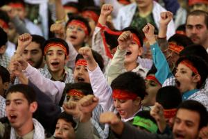
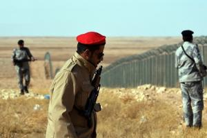
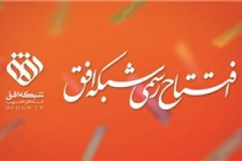
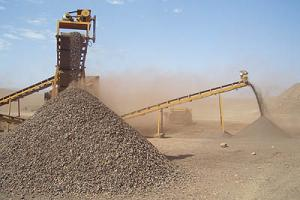
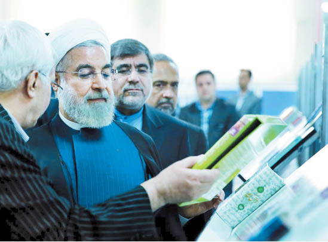
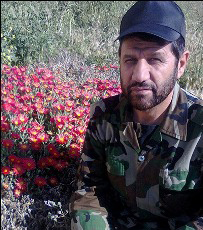
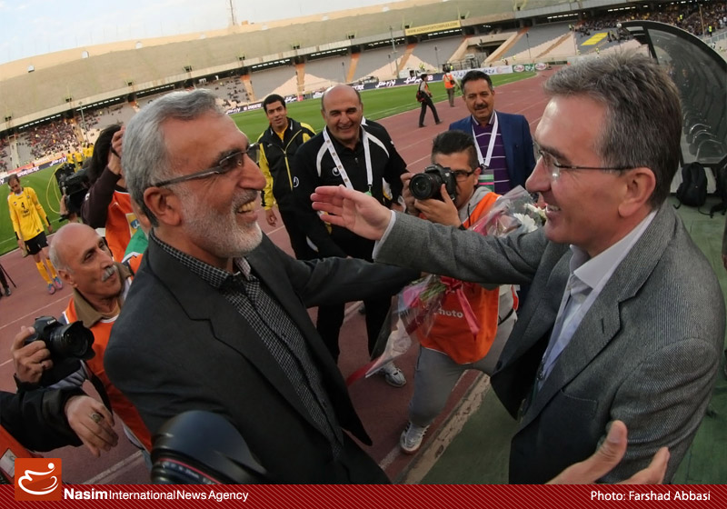

آموزش بدون پرورش، نسل را تباه میکند

باید کاری کنیم این نوجوان و جوان که در این دوران حساس و مهم و تعیینکنندهی انقلاب و نظام زندگی میکند، امام و جنگ و انقلاب را ندیده است، با آن ایمانی بار بیاید که بتواند در مقابل مطامع دشمنان، در مقابل تجاوز بیگانگان، در مقابل سلطهگری امریکا، در مقابل نفوذطلبی دستگاههای استعمارگری، مثل کوه محکم بایستد.
<عربستان از ترس داعش دیوار امنیتی ساخت>

یم سعودی از بیم نفوذ تروریستهای داعش طولانیترین دیوار امنیتی جهان را در مرز عراق احداث کرد.
به گزارش فرهنگ نیوز، پس از حمله دو ماه پیش داعش به نقاطی در مرز عربستان، ریاض با احداث دیوار مرزی شامل ۵ لایه حصار، برجهای دیدهبانی، دوربینهای دید در شب و دوربینهای راداری سعی کرده خود را از بحرانی که همسایگانش را در بر گرفته حفظ کند.
رسانههای سعودی اعلام کردند که عربستان کنترل مرزهای این کشور با عراق را برای جلوگیری از نفوذ گروههای تندرو تشدید کرد و با احداث طولانیترین دیوار امنیتی جهان به نام «دیوار بزرگ» مرز خود با عراق را استحکام بخشید.
شبکه «افق» رسما آغاز به کار کرد

شبکه تلویزیونی افق متعلق به گفتمان انقلاب اسلامی پس از گذراندن دوره آزمایشی امروز به صورت رسمی آغاز به کار کرد.
به گزارش فرهنگ نیوز، شبکه تلویزیونی افق طبق وعده از پیش داده شده، امروز 8 اسفند راس ساعت 17 با شعار «نگاهت را به افق بسپار» به صورت رسمی افتتاح شد.
بنا بر این گزارش، این شبکه تلویزیونی با پخش سرود جمهوری اسلامی که برای تولید آن بیش از یکسال زمان گذاشته شده آغاز به کار کرد و در ادامه فردی از قاریان ممتاز کشورمان به قرائت آیاتی از قرآن کریم پرداخت.
اجرای ویژه برنامه افتتاح رسمی شبکه افق را نادر طالب زاده بر عهده دارد.
طالب زاده در آغاز مراسم افتتاح رسمی این شبکه گفت: شبکه افق متعلق به گفتمان انقلاب اسلامی است و 35 سال است که جای این شبکه خالی است. شبکه افق آرزوی شهید مرتضی آوینی بود.
مفت فروشی 16 میلیون تن سنگ آهن

با رکود شدید در طرح های زنجیره فولادسازی کشور، صادرات ذخائر سنگ آهن ایران به قیمت تقریبا مفت به کشورهای خارجی همچنان ادامه دارد؛ صادراتی که فقط برای معدودی از صادرکنندگان، درآمدهای میلیاردی دارد. به گزارش فرهنگ نیوز ، بر اساس آمار گمرک، در 10 ماه اول امسال نزدیک به 16 میلیون تن سنگ آهن به صورت خام یا با حداقل فرآوری از کشور صادر شده است. مشرق نوشت؛هر تن سنگ آهن به طور متوسط امسال 29 دلار مبادله ای یا 23 دلار آزاد صادر شده است
دلیل سفر احمدینژاد به ترکیه از زبان افخم

مرضیه افخم دربارهی سفر محمود احمدینژاد به ترکیه و اقدامات وزارت خارجه در این باره گفت: سفر آقای احمدینژاد کاملا شخصی است و هماهنگی از سوی وزارت خارجه به عمل نیامده است.
به گزارش فرهنگ نیوز، سخنگوی وزارت خارجه دربارهی سفر محمود احمدینژاد به ترکیه گفت: سفر آقای احمدینژاد کاملا شخصی بوده است.
محمود احمدینژاد رئیسجمهور پیشین امروز (پنجشنبه) برای شرکت در مراسم گرامیداشت نجمالدین اربکان از شخصیتهای ترکیه به استانبول رفت. بر اساس گزارش رسانهها گفته میشود که این سفر به دعوت فرزند اربکان و رئیس بنیاد اربکان انجام میشود.
.
ظریف از ماجرای داد و فریاد خود بر سر جان کری می گوید: گاهی اوقات از کوره در رفتن اجتناب ناپذیر است / دوبار فریاد زدن ممکن است استرس انسان را کاهش داد

محمدجواد ظریف وزیر خارجه ایران در گفتگو با نیویورکر اظهار داشت: تدبیر حکم می کند که تمامی جناح ها به واقعیت ها در جهان توجه کنند که شما در آن قادر به انتخاب مخاطب خود نیستید. به گزارش سرویس بین الملل «انتخاب»، نیویورکر آورده است: هشت هفته ی آینده در عرصه دیپلماسی ممکن است دشوارترین دورانی باشد که ما در حوزه ی منع اشاعه تسلیحات هسته ای با آن مواجه بوده ایم.
مشكلات كتاب و كتابخواني هم بهگردن رسانهها افتاد!

رئیسجمهور در مراسم آغاز به کار نمایشگاه کتاب تهران از عملکرد رسانهها در معرفی نکردن کتاب انتقاد کرد و ارزش قائل نشدن برای کتاب را نشانهای از باقی ماندن معضلات دانست. این نخستین بار نیست که مسئولان دولتی ریشه اصلی مشکلات را نه در عملکرد مدیران بلکه در رسانهها جستوجو میکنند. البته دولتها سابقه فرافکنی مشکلات را دارند و دیواری کوتاهتر از رسانهها هم در این خصوص پیدا نشده است.
ضد و نقیض های قلیانی/ قلیان کشیدن یا نکشیدن؟! مسئله این است

اظهارات و بخشنامه های مسئولان برای ممنوعیت قلیان هر از چند گاهی مطرح می شود و دامنه بحث ها داغ می شود. اما آنچه که می ماند، داغی ذغال های قلیان ها در سطح شهر است. چرا که ممنوعیت عرضه قلیان به سریالی تبدیل شده است که روزی ممنوع می شود و روز دیگر خبری از بخش نامه ها و اظهارات برخورد آمیز ناجا نیست! قلیان را با وجود ضررهایی که برای سلامتی دارد، بسیاری نمادی از فرهنگ و تاریخ گذشته ایران میدانند.
یک «در حاشیه» واقعی در خیابان ولیعصر!/ مهران مدیری کجایی که یادت بخیر!
این یک یادداشت واقعی است؛ یک مکالمه واقعی که برحسب اتفاق تکرار تلخ و البته واقعی یکی از جنجالیترین بحثهای طنز تلویزیون در ماههای گذشته بود. - خانم شما که سوپروایزر بیمارستان.... هستید، واقعاً جای تأسف داره که اینرو ندونید. باید از همه بچههاش رضایتنامه بگیرید. تکتک فرزندها باید برای عمل رضایت بدن.... من نمیدونم. بیماری نصف معدهاش رو گرفته... ما سعی خودمونو میکنیم.
شهادت فرمانده ایرانی مدافع حرم در سوریه +عکس

سردار حاج هادی کجباف طی عملیاتی که در منطقه "بصر الحریر" استان درعا صورت گرفت به مقام رفیع شهادت نایل آمد. شبکههای اجتماعی وابسته به گروههای تکفیری مدعی شدند که پیکر مطهر این شهید شوشتری در اختیار آنان است. به گزارش خبرگزاری اهل بیت (ع) ـ ابنا ـ منابع آگاه از شهادت یک فرمانده مستشار ایرانی که مسئولیت ساماندهی نیروهای مدافع حرم اهلبیت(ع) در سوریه را بر عهده داشت، خبر دادند. سردار حاج «هادی کجباف» ظهر روز یکشنبه 30 فروردین طی عملیاتی که در منطقه "بصر الحریر" استان درعا صورت گرفت به مقام رفیع شهادت نایل آمد.
فرکی: هدایت تیم ملی به من پیشنهاد شد اما چون کیروش سرمربی بود، نپذیرفتم

سرویس ورزشی «فردا»- سرمربی سپاهان ادعا میکند فعلا در مورد تمدید قرارداد با سپاهان فکر نمیکند، چون تمرکزش روی بازیهای باقیمانده تیمش است. هرچند به نظر میرسد با نتایجی که این تیم در چند هفته اخیر گرفته، به احتمال فراوان این پیشنهاد را به زودی دریافت خواهد کرد. حسین فرکی در گفتگوی تفصیلی با «نسیم» تایید میکندکه بعد از جامجهانی پیشنهاد هدایت تیم ملی را دریافت کرده اما چون در آن زمان هنوز کیروش سرمربی تیم ملی بوده این پیشنهاد را نپذیرفته است.
ما را چه به کارلوس؟

سرویس ورزشی «فردا»- فوتبال ایران روزهای عجیبی را با کارلوس کی روش تجربه می کند. یک روز دستور می دهند قراردادش لغو شود و به کشورش بازگردد؛ اما به یک باره همه چیز عوض می شود و دستور می رسد که بماند. یک مدیر اقتصادی از کی روش به عنوان مربی تمرین دهنده یاد می کند؛ اما به یک باره نظرها عوض می شود و تبدیل می شود به ستاره بخت فوتبال ما و ... به گزارش مشرق اینها همه هست؛ اما کمتر پیش آمده که نگاهی دقیق و کارشناسی به حضور مرد پرتغالی صورت گیرد.